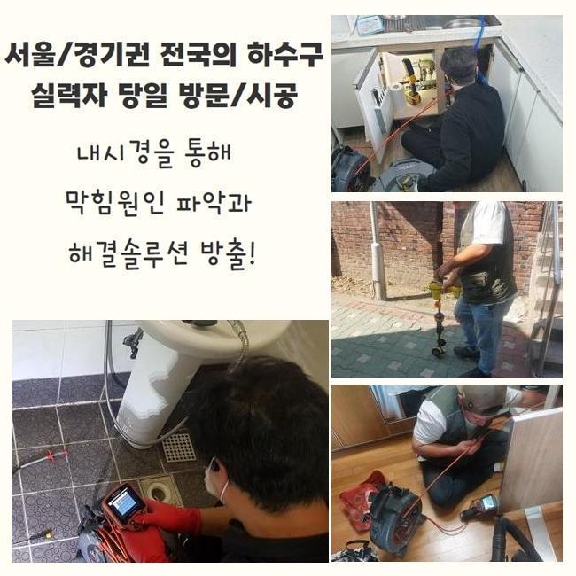
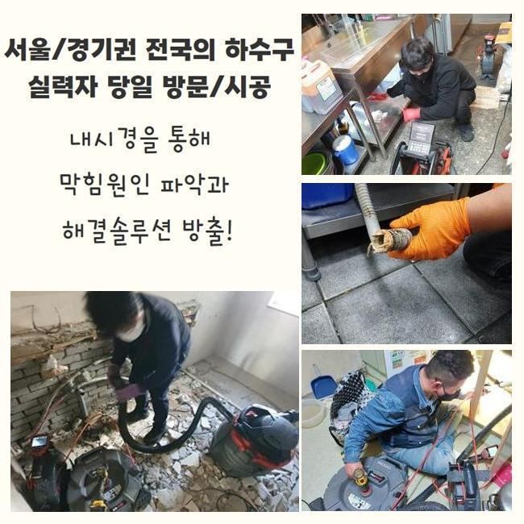
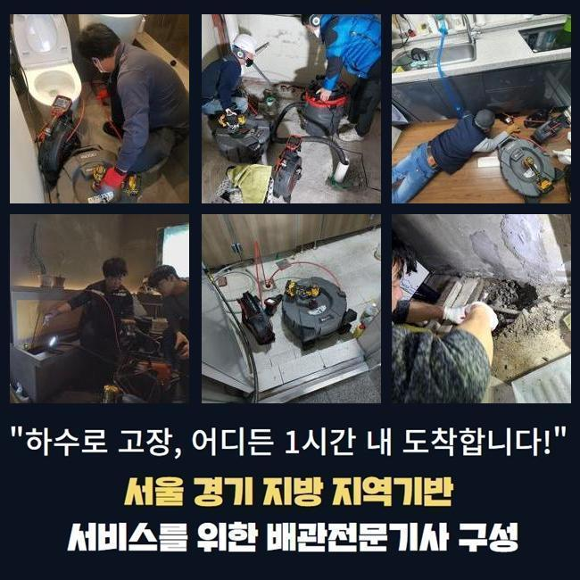
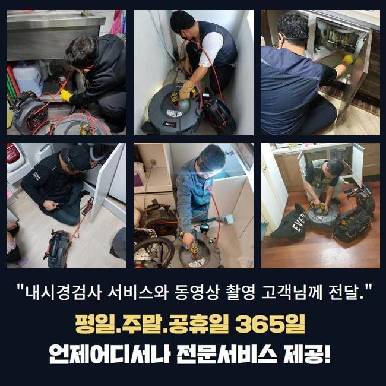
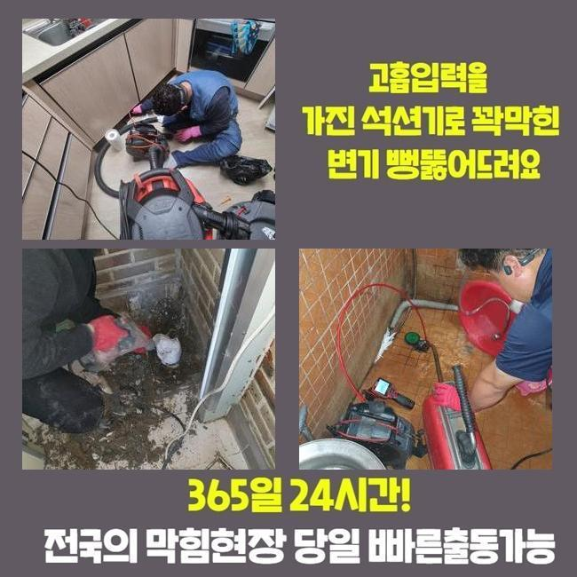
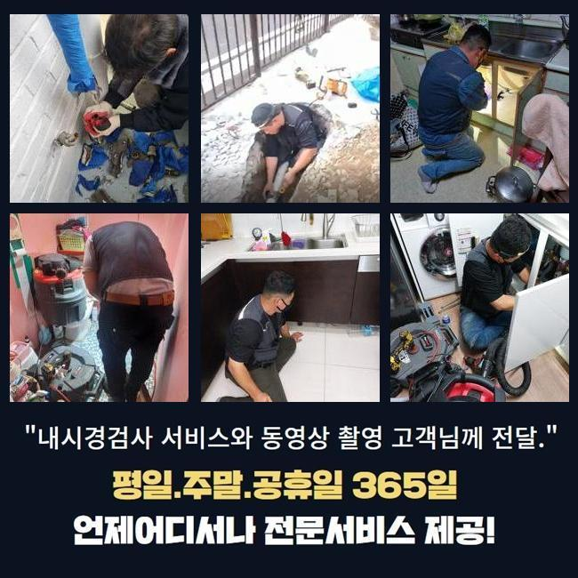
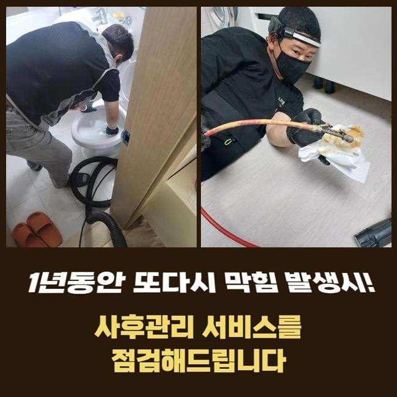

🏠 광주 장지동하수구역류 남종면 하수구뚫는업체 물샘전문업체
광주 장지동 하수구막힘 전문 시공 후기

📋 작업 개요
- 위치: 광주 장지동, 장지동, 광주
- 서비스 유형: 하수구막힘, 배관막힘, 누수수리, 역류해결, 뚫는업체, 배관청소, 고압세척
- 작업 일시: 2025. 6. 9. 12:38
- 업체명: 하수구수사대 (010-5615-2118)
🔍 문제 상황
광주 장지동하수구역류 남종면 하수구뚫는업체 물샘전문업체
얼마전 근처의 상가에서 하수관의 역행이 벌어졌다는 이야기를 듣고 빠르게 손봐드리려고 현장으로 이동하게 되었습니다
복층의 건물이라면 건물에 깔려있는 모든 파이프들이 결국 모이게 되는 모양새를 지닌 건물들이 상당히 많아요
많은 관로 중 하나에서 막힘이 도래하게 되면 또다른 배수로도 고장이 나서 많은 거주자분들이 어려움을 겪어야만 할 수 있어요
오늘 하수구뚫음을 한 곳은 다수의 상가들이 입점한 상가로 예고 없이 하수구 중단 이슈가 터져서 가게 오픈을 못하다 보니 당장의 비용적인 리스크도 건물 자체에 비상이 걸렸다고 해요
복합적인 대형건물에서 하수구 이슈가 거듭 터진다면 세입자나 건물주 모두에게 어려움을 야기할 수 있다보니 서둘러 행동하여 작업지로 이동하게 됩니다
건물에 도착하면 피해 정도가 제일 극심한 장소로 가서 통수 검사를 해보았는데요
통수검사의 경우는 수돗물을 세게 틀어보고 배수구 구멍으로 쏟아부은 물이 나가는 스피드를 검사하여 기능을 확인합니다
수돗물이 줄어드는 속도가 현저히 다운된 것이 보였으며 중간중간 흐름의 끊김이 분명히 존재한다는 사실을 목격하게 됐습니다
종합적인 막힘의 문제들이 야기됐다는 점은 배관의 내면에 생각보다 많은 오물이 누적되어 있을 것이 눈에 선했습니다

🔎 원인 분석
💡 전문가 진단: 정밀 진단 장비를 사용하여 슬러지의 고착 여부를 판명하고 타격/세척 작업을 실시했습니다.
누적된 오염물질을 올바르게 소강시키지 못할 경우에는 주변 공간까지도 손상이 옮겨져 갈 위험이 있으니 시공의 속도를 높였습니다
하수구 장애를 초래하는 원인들은 배수로 곳곳에 누적된 이물질이 대부분이니 이것들을 모조리 삭제시켜야만 통로가 나옵니다
고객님들이 평범하게 물을 쓰실 때마다 액체에 함유된 성분들이 있는데 물 속에 섞어들어서 방출이 되어버린다면 꺾인 부분 등에 고여서 통수의 방해물이 될 수 있습니다
의도적으로 고형화된 물질들을 배출하지 않아도 생활용수 속의 석회물질 물의 미네랄이 조금씩 말라붙습니다
내측 현황을 탐방해보니 유분막과 머리카락처럼 물살에 딸려간 이상물질들이 잔뜩 뒤섞인 채 머무르고 있었어요
얽히고 꼬이다가 끌어당기는 힘까지 생긴다면 거대한 장애요소가 될 수 있어요
물길을 저해하는 상황이라면 하수가 거꾸로 치솟는 일까지 피할 길이 없을 상태까지도 악화될 수 있습니다
날마다 물과 만나기 때문에 오염원이 급속도로 부패할 확률이 매우 우세하며 부패과정에서 유발되는 쿰쿰한 냄새가 떠다녀서 고정적인 집냄새가 되어버립니다
물을 이동시키는 배관은 언제나 습기가 차있기에 위생도 더 나빠지는데다 두통을 유발하는 냄새도 풍겨져요
침전물이 붙은 장소가 여러 곳일 때가 있으니 빠트리지 않고 골라내야 합니다
일부 구간만 장애가 생겼다면 흡입을 돕는 석션만으로도 물꼬를 틔울 수 있습니다

🔧 작업 과정
구석이 많은 구조라거나 관로가 복잡하게 이어져있다면 흐름을 봉인하는 포인트들이 찾아볼수록 정말 많을 것입니다
그러므로 작업 전에는 관로 모양과 이물질의 견고함과 크기를 미리 탐색하는 게 필요합니다
물을 한순간에 내려보내도 물의 흐름이 재생되지 못하면 과하게 커져서 빈틈이 없다거나 고착물질이 됐을 수 있습니다
초기를 넘어선 막힘건을 해결해 내기 위해서는 통수를 끊기게 한 대상을 표적하여 세척하는 과정에 착수해야 할 것입니다
얼마나 밀착되어 있는지 등의 실황을 파악해야만 작업 툴도 결정할 수 있습니다
배관에 특화된 카메라 장치는 바닥 아래 자리한 배관까지도 곧바로 중개를 해주는 도구로써 찌꺼기가 붙은 지역과 오염원의 속성을 비교적 자세히 알 수있게 해줍니다
시공 중에 카메라를 써서 체크하면 작업이 다치는 부위는 없는지 수시로 검사할 수 있어서 작업의 완성도가 높아집니다
청소에 앞서서 배관의 형상을 보기 위해서나 끝날 때 청소가 잘 됐는지 더블체크 해주기 위한 용도로 카메라를 쓰고 있습니다
관로 전반을 검토해보았더니 메인관로는 당연하고 옆의 부분까지도 오물이 딱 달라붙어있는 것을 눈으로 확인할 수 있었네요
단순 막힘은 전동의 힘을 갖고 있는 스프링 장비나 플렉스샤프트를 접목해서 이물질을 자잘하게 절단시켜서 문제를 소강시킬 수 있겠습니다
옥외 시설물이나 연결 부위에 길게 펼쳐진 영역에 노폐물들이 덕지덕지 붙어버렸다면 드라마틱한 차이점을 기대할 수는 없습니다
광활한 배수로이므로 달라붙은 오염원이 브레이크없이 쌓여만가니 소박한 석션으로는 외부배관은 수습자체도 정말 힘들 것입니다
청소할 장소가 광활할 시에는 파워있는 물살을 쏘는 고압세척기의 힘을 빌리는 솔루션이 적절할 것이빈다
이 기법은 배관의 길이와 크기를 고려한 노즐을 끼운 채 물을 쏘게 되는 방법이며 이미 단단해진 장애요소라도 갈갈이 찢어줍니다
공간에 있는 배관들은 생각보다 강하지 못해서 현장에 적합한 세기를 재고하고 수정해 나갑니다
하수구 안을 고쳐주기 전에 배수로의 결함과 취약점에 대해서도 꼼꼼히 숙지를 해주고 하수구의 세정업무를 시행해요
장소마다 강도 조절을 하면서 연쇄적으로 배관의 청소를 임하면서 통수장애를 만들 정도로 빈 틈도 없이 막아서고 있었던 노폐물들을 맑고 상쾌하게 덜어낼 수 있었어요


✅ 작업 완료
끝으로 관로의 작은 입자까지도 잔여분량이 남아있지 않은지 알아보고 나면 기능을 되돌리는 전작업이 끝납니다
수돗물이 정상 방향으로 내려가나 배수 검사까지 도맡아드리고는 그밖의 의문점이 있다면 놓치지 않고 이해되도록 알려드려요!
마감 정리가 잘됐나 보고 정상적인 이용이 바로 가능할 것인지 야무지게 체크해 드립니다
여러 하수도 장비들로 생활에 방해가 됐던 하수구 중단 문제를 처리해 드린다고 약속드립니다
하수 전반에 대한 필요하신 게 있으시다면 연락을 편하게 걸어주세요




⚠️ 베란다 누수 및 방수 관리 방법
- ✅ 비가 많이 올 때 창틀 주변이나 아래층 천장에 얼룩이 생기는지 정기적으로 확인해 보세요.
- ✅ 우수관 주변 실리콘 마감이 들뜨거나 깨진 틈새가 있는지 손상 여부를 수시로 체크하세요.
- ✅ 베란다 바닥 타일의 줄눈(메지)이 소실되면 그 틈으로 물이 침투하여 누수가 유발됩니다.
- ✅ 누수 의심 증상 발견 시 방치하면 아래층 손실이 커지므로 즉시 전문가의 진단을 받으십시오.
💡 핵심 정리
- 확실한 장비 작업(내시경 점검 및 샤프트 스케일링)으로 원인을 뿌리 뽑습니다.
- 작업 후 1년 이내에 동일한 부위 재발 시 100% 무상 A/S 서비스를 보장합니다.
- 서울 · 경기 · 인천 전 지역에 24시간 언제든 긴급 출동할 수 있도록 항시 대기 중입니다.
❓ 자주 묻는 질문 (FAQ)
🚨 광주 장지동 하수구막힘 문제로 고민이신가요?
정확한 원인 진단과 확실한 시공으로 재발 없는 해결을 약속드립니다.
24시간 긴급 출동 | 서울 · 경기 · 인천 전지역 | 1년 내 재발 시 무상 A/S